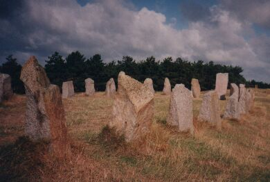

La Mielle d'Agon, en Nouormandie continentale, r'sembl'ye hardi à nos mielles d'St. Brélade, mais oulle est eune presqu'île entré la riviéthe Sienne et la Baie d'Mont Saint Miché - un grand banc d'sablion auve l'ieau sus les deux côtés. coumme eune aidgulle oulle a eune pointe - la Pointe d'Agon auve eune veue. Juste avant la veue y'a chein qué j'allis vîsiter au mais d'Août 1999 - lé monument à Fernand Lechanteur.
Ch'na s'trouve à côté d'la route sus eune mielle et ch'est coumme un dolmen - eune allée d'pièrres - trente-trais pièrres arrangies en forme dé baté Nourmand. Châque pièrre est înscrite auve des runes dé forme Viking et les deux grandes pièrres - les d'vants -ont les noms d's auteurs Nouormands et Jèrriais et la dêdicâtion à Fernand Lechanteur - tout en style Viking. Lé nom d'Jèrri est înscrit sus la pièrre à drouaite d'la grande pièrre du Sud.
Y'a étout les noms d'Fraînque Le Maistre et d'George Le Feuvre. En tout, ch'est un monument mystéthieux dans un lieu pliein d'magie.
L's înscriptions sus l'monument
POUR
FERNAND LECHANTEUR
NORMAND
ET
POETE
I FIT EN SORTE
1910 1971
ANDRE LOUIS : ANDRE DUPONT: COTIS CAPEL ET MARCEL LELEGARD MATITENT CHU DREIT BOUOT

A LU CHAUNTRE
COTENTIN ET NORMAN
DIE D'O LOUIS BEUVE
FRAINK LE MAISTRE
LOUIS LE MARE JEAN
MABIRE JEAN ADIGARD
GEORGE LE FEUVRE
JERRI
Du Bulletîn d'Quart d'An d'l'Assembliée d'Jèrriais:
La cérémonie d' "inauguration" du monument à Fernand Lechanteur eut lieu lé 9 dé mai, 1976, à La Pointe d'Agon, pas liain d'Granville en Nouormandie. Chu pus grand des Normannistes dé san temps pâssit l'pas lé 7 dé mai en 1971, à l'âge dé 60 ans.
Lé monument est en forme dé drakkar, ou navithe des Vikings d'aut'fais, comme étaient les anciens monuments des Scandinaves - deux grand's piérres (l'avant et l'arriéthe du baté) et un bouôn nombre dé p'tites ès bords, la preunmiéthe dé ches'-chîn tout partitchuliéthement, à gauche dé la pièrre d'avant (r'gardant en mé, comme dé raiethon), étant gravée "Agon" - lieu d'naissance du défunt, et la preunmiéthe à drouaite èrprésentant Jèrri et înscrite comme chenna pouor sîngnifer l'importance dé l'Île dans la dialectologie Nouormande.

Pus d' quat' chents pèrsonnes vîndrent pouor l'occâsion chu dînmanche arlévée-là et, pouor èrprésenter l'île - lé Dr Frank et Mde. K. Le Maistre et lus fis aîné F. Amy Le Maistre, et les Mêssieux Max Lucas et Ph. Mauger de Veulle. Véthe, les gens vîndrent dé partout, dé touos les coins d'La Nouormandie, Haute ou Basse, et méme dé Brétangne.
Eh bein, iun des cheins tchi prînt part, auve Madame Beuve (belle-fil'ye dé Louis Beuve) Jean Mabire et Olaf Beuve, au "dévoilement" d'la pièrre d'arriéthe du monument 'tait l'Dr. Fraînque Le Maistre, ses travaux dé toute sa vie l'ayant pliaichi au d'vant d'touos les cheins tch'ont voulu "rendre sa noblesse à la langue Normande". Ch'est en tchi, sus chette-chîn, ieune dé ches grand's pièrres tchi s'trouvent dé châque but du monument, lé nom du Dr. L'Maistre est gravé lé tout préchain du fanmeux Louis Beuve, les cheins dé Louis Le Marc, Jean Mabire, Jean Adigard (des Gautries) et George Le Feuvre v'nant auprès et dans ch't ordre-là tous des grands anmîns à Fernand Lechanteur. Toutes les înscriptions sont "runiformes ", et la grand' pièrre d'avant, ou pièrre du nez, porte (à l'entou du chein d'Fernand L'chanteux) les noms d'André Louis, André Dupont Côtis-Capel (l'Abbé Albert Lohier) et (l'Abbé) Marcel Lelégard, ches-chîn ayant été, auve les défunts Louis Le Marc et Fernand Lechanteur li-même, les cheins tchi décidîdrent d'avanchi et d'encouothagi l'êtude du Nouormand comme i' faut.
Dévant la dêcouvri, chutte pièrre portait la banniéthe dé Nouormandie - trais léopards d'or sus du rouoge. La pièrre d'arriéthe - la crouaix d'Saint Olaf. Châtcheune des p'tites pièrres des bords portent l's innitiales des cheins tchi l's ont données.
Les grand's pièrres ayant 'té dêcouvértes, l'Abbé Lelégard - l'âme dé toute ch't' entréprînse - pâssit la garde du monument au Maire d'Agon, pouor la municipalité à tout janmais. L'Abbé étout fit mention spéciale des gens v'nus d'Jèrri à l'esprés pouor la cérémonie, et i' liut eune partie d'la litourgie en Français comme nou faithait sèrvi dans l's églyithes dé pâraisse dé i'Île dévant la Dgérre. Et pis i' d'mandit à tout l'monde, parmi lestchés i' s'trouvait gentiment d'savants distîndgis, d'aller "à bord du navithe" en d'dans des pièrres pouor lé lanchi à la mémouaithe dé Fernand Lechanteur. Pus tard un sèrvice fut condit par l'Abbé, en Nouormand, dans la Chapelle des Marins à Gonneville.

Viyiz étout: